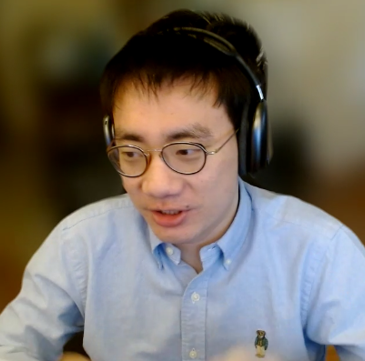
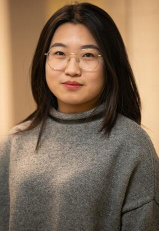
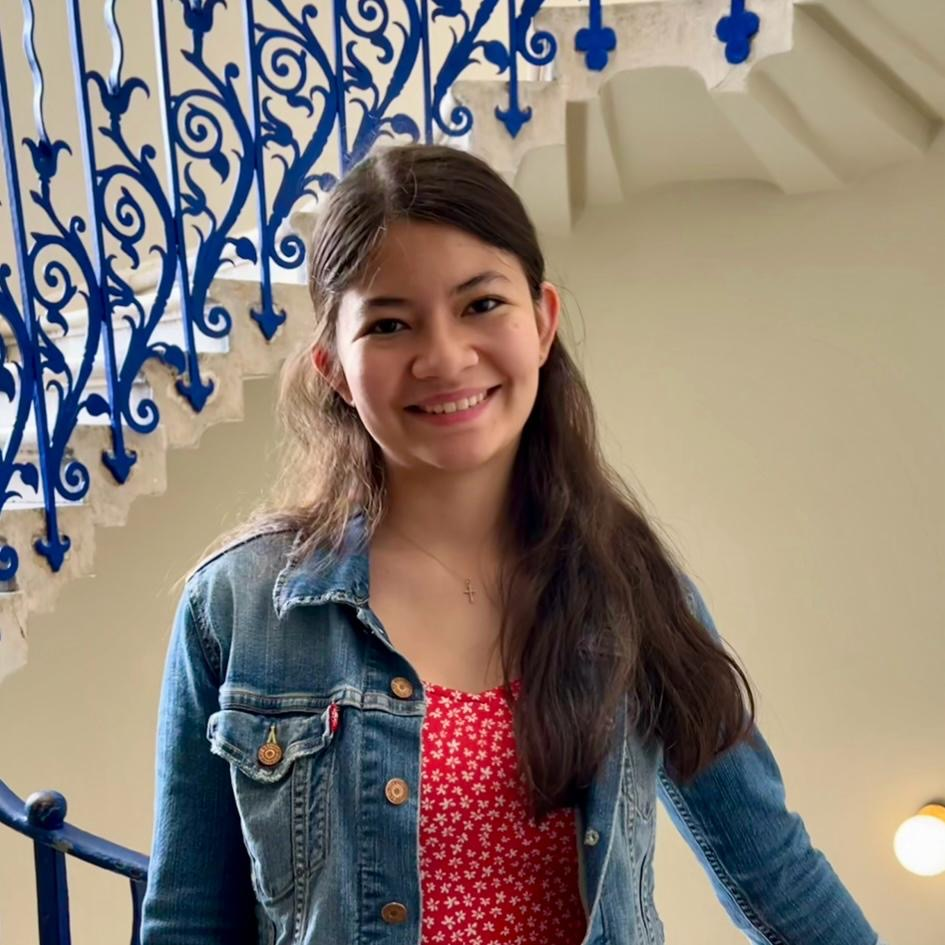
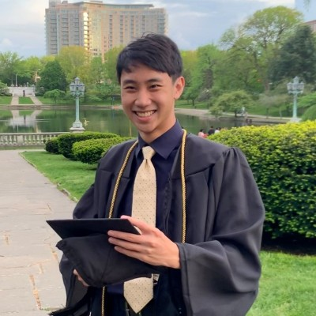
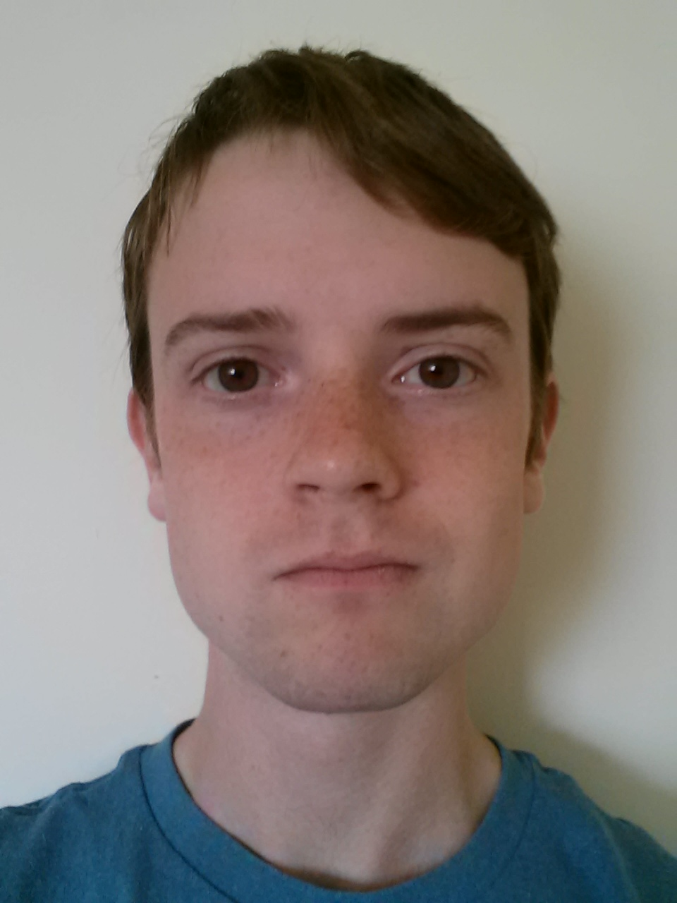

To Prospective Students and Postdocs
To Prospective Students and Postdocs
- Yes-Lab, led by Prof. Yanfang (Fanny) Ye at the University of Notre Dame, is a team consisting of faculty, postdocs and students with research focusing on AI/ML, data mining, cybersecurity, and public health. We very much enjoy developing novel yet elegant techniques to solve real-world problems that generate broader impacts. By harnessing large-scale, multi-source, multi-modality data, we discover new research problems, propose novel machine learning models, and develop advanced AI techniques for real-world driven applications in cybersecurity and public health. More specifically, we strive to (1) advance knowledge and science in graph learning, trustworthy LLMs, and multimodal learning, (2) bridge AI/ML and cybersecurity concentrating on AI security and safety, large-scale malware detection, and the study of the evolving underground ecosystem, and (3) develop AI and data-driven techniques to combat the opioid crisis and infectious disease outbreaks. Integrating humanity and technology, our long-term goal of research is to advance capabilities and trustworthiness of AI to provide state-of-the-art innovations i) to secure cyberspace for its users, and ii) to improve health and well-being of people around the world. Please refer to our research webpage for details of our works.
-
I am currently looking for multiple Ph.D. students and Postdocs doing supervised research or independent study with me in the CSE department at the University of Notre Dame. If you are a well motivated and dedicated student pursuing a Ph.D.
degree or postdoc related to the areas of AI/ML, Data Mining, Cybersecurity, and Public Health, please send me an email with your CV. I aim to recruit 1 postdoc and 5 Ph.D. students for Spring/Fall 2026 (until filled).
The postdocs will be provided with competitive packages and the Ph.D. students will be provided with multi-year research assistantships which cover the full cost of tuition and offer the full year stipend ($41K+ for 12 month/year) and benefits. I will work with each postdoc or student to identify the most suitable topic based on his/her academic interests and background. I will also help each postdoc or student to build his/her strong capability and publication record as well as the career development with a good timing. I very much enjoy working with each member in my group and take each postdoc or student as a friend and a collaborator. Doing research is to build an enjoyable career and have fun.
My expectations on perspective Ph.D. students are: (1) self-motivated, honest, diligent, intelligent, and easy-going personality; (2) strong research potential, programming capability, mathematical background; and (3) dedicated to research and willing to publish in prestigious forums. The minimum requirements for Ph.D. students are: B.S. in Computer Science (applicants with a master degree will be preferred), or related fields, and other general admission requirements.
My Students and Postdocs
-
Current Students and Postdocs
Shifu Hou (Research Fellow, Spring 2025 -- )
Ph.D. from Case Western Reserve University
Research Area: AI/ML, Data Mining, Cybersecurity

Hadeel Almaimani (Ph.D. Student, Summer 2021 -- )
Research Area: Cybersecurity, Data Mining
 Tianyi Ma (Ph.D. Student, Summer 2022 -- )
MS from University of Southern California
Research Area: Machine Learning, Public Health
Shang Ma (Ph.D. Student, Fall 2022 -- )
BS from Shichuan University
Research Area: Cybersecurity, Software Engineering
Chaoran Chen (Ph.D. Student, Fall 2022 -- )
Co-advisor: Prof. Toby Li
MS from Carnegie Mellon University
Research Area: Cybersecurity, Human-Computer Interaction
Zheyuan Zhang (Ph.D. Student, Summer 2023 -- )
MS from New York University
Research Area: AI/ML, Public Health

Zehong Wang (Ph.D. Student, Fall 2023 -- )
MS from University of Leeds
Research Area: AI/ML, Data Mining
Yiyang Li (Ph.D. Student, Fall 2024 -- )
BS from Northeastern University
Research Area: AI/ML, Public Health
Zhengqing Yuan (Ph.D. Student, Fall 2024 -- )
BS from Anhui Polytechnic University
Research Area: AI/ML, Cybersecurity
Yijun Ma (Ph.D. Student, Fall 2025 -- )
MS from Renmin University of China
Research Area: AI/ML, Data Mining
Kaiwen Shi (Ph.D. Student, Fall 2025 -- )
BS from Peking University (Yuanpei College)
Research Area: AI/ML, Cybersecurity, Public Health
Weixiang Sun (Ph.D. Student, Fall 2025 -- )
BS from Northeastern University
Research Area: AI/ML, Cybersecurity, Public Health
Vincent Galassi (REU, ND, Fall 2023 --)
Research Area: AI/ML, Public Health
-
Graduated Students and Postdocs
Fangtian Zhong (Postdoc, Summer 2022 -- Spring 2023)
Research Area: Software Security, Program Analysis, Machine Learning
Current Employment: Assistant Professor (TT), University of Central Missouri, Fall 2023-.

Jianfei Zhang (Postdoc, Fall 2019 -- Fall 2020)
Research Area:Data Mining, Machine Learning, Public Health
CIKM 2021 Best Paper Award (Full Paper Track)
Current Employment: Research Associate, University of Sherbrooke, Canada, Summer 2022-.
Previous Employment: Research Associate, University of Alberta, Canada, Spring 2021-Spring 2022.
Qianlong Wen (Ph.D., March 2025)
Research Area: Machine Learning, Public Health
Ph.D. Dissertation:From Chaos to Harmony:
Addressing Data Complexity, De-noising and Adaptability in Graph Machine Learning
SIGKDD 2022 Best Paper Award Shortlist (Research Track)
Current Employment: Machine Learning Scientist, TikTok, San Jose CA, USA, April 2025-.

Mingxuan Ju (Ph.D., November 2024)
Research Area: AI/ML, Data Mining
Ph.D. Dissertation:Cost-effective Machine Learning Techniques for Graphs
WWW 2021 Best Paper Award Shortlist
Notre Dame CSE 2025 Outstanding RA Award
Notre Dame 2025 Eli J. and Helen Shaheen Award Nominee
Employment: Research Scientist, Snapchat, Seattle WA, USA, March 2024-.

Yiyue Qian (Ph.D., May 2024)
Research Area: AI/ML, Cybersecurity, Public Health
Ph.D. Dissertation:Graph Representation Learning Techniques for the Combat against Online Abusive Activities
CSE 2024 Outstanding RA Award - Honorable Mention
Current Employment: Applied Scientist, Amazon, Seattle WA, USA, May 2024-.
Yiming Zhang (Ph.D., December 2022; MS, December 2018)
Research Area: AI/ML, Cybersecurity, Public Health
Ph.D. Dissertation: Heterogeneous Graph Learning Techniques for Combating Opioid Epidemic and Online Trafficking
MS Thesis: Using Social Media to Combat Opioid Epidemic
Current Employment: Research Scientist, Singapore Management University, Spring 2023-.
Shifu Hou (Ph.D., June 2022; MS, June 2019)
Research Area: Machine Learning, Data Mining, Software Security
SIGKDD 2017 Best Paper Award and Best Student Paper Award (ADS Track)
Ph.D. Dissertation: AI-driven Techniques for Malware and Malicious Code Detection
MS Thesis: Automatic Detection of Insecure Code Snippets in Stack Overflow
Current Employment: Research Fellow, University of Notre Dame, Spring 2025-.
Previous Employment: Postdoc, University of Notre Dame, Fall 2022-Fall 2024.
Yujie Fan (Ph.D., May 2022)
Research Area: Machine Learning, Data Mining, Cybersecurity
Ph.D. Dissertation: Heterogeneous Graph Representation Learning: Techniques and Applications
Current Employment: Research Scientist, Visa Research, Palo Alto, US, Summer 2022-.
Lingwei Chen (Ph.D., May 2019)
Research Area: Machine Learning, Data Mining, Cybersecurity
IEEE EISIC 2017 Best Paper Award
Ph.D. Dissertation: Enhancing Security of Machine Learning-based Malware Detection at Feature & Model Levels
Current Employment: Assistant Professor (TT), Rochester Institute of Technology, Fall 2025-.
Previous Employment: Assistant Professor (TT), Wright State University, Summer 2021-2025.
Michael Danzi (Master, May 2025)
Research Area: AI/ML, Pulic Health
Sidney Liu (Master, May 2025)
Research Area: AI/ML, Data Mining

Qian Peng (Master, April 2022)
Research Area: Machine Learning, Cybersecurity
MS Thesis: Heterogeneous Graph Neural Network for Key Player Identification in Underground Forums
Current Employment: Software Engineer, China Intl. Capital Corp., Beijing, Summer 2022-.
 Shiyu Sun (Master, June 2021)
Research Area: Data Mining, Public Health
Current Employment: PhD Student (GRA), George Mason University, Fall 2021-.

Jian Liu (Master, June 2018 )
Research Area: Cybersecurity, Machine Learning
MS Thesis: Automatic Detection of Cybercrime-suspected Threads in Online Underground Forums
Current Employment: PhD Student (GRA), University of South Carolina, Fall 2018-.

|
Sai Ram Nellutla (Master, December 2015)
Research Area: Data Mining, Mobile Security MS Thesis: A Safety Support System for Children's Anti-loss Current Employment: Software Engineer, M*Modal, Pittsburgh, PA |
|
MRishitha Reddy Tumma (MS, March 2018)
|
|
Madhusudhan Reddy Boddu (MS, March 2017)
Current Employment: MongoDB Developer, Amazon, Silicon Valley |

|
Sai Venkata Akhil Thammineni (MS, November 2017)
|
|
Srinivas Garapati (MS, October 2017)
|
|
Utsav Kirtikumar Upadhyay (MS, September 2017)
|
|  |
Sofia Nelson (REU, BS from ND, Summer 2024 -- May 2025) Research Area: Cybersecurity, Machine Learning |
|
Varun Taneja (REU, BS from ND, Summer 2024 -- May 2025) Research Area: Data Mining, Public Health |
|
Jasmine White (REU, BS from Purdue, Fall 2023 -- May 2024) Research Area: Data Mining, Public Health Current Employment: Lab Assistant at Northwestern University |

|
Evan Hall (REU, BS from ND, Fall 2023 -- May 2024) Research Area: AI/ML, Cybersecurity Current Employment: Software Developer at TQL, Cincinnati OH, USA |

|
Landon Bachman (REU, BS from ND, Fall 2023 -- May 2024) Research Area: AI/ML, Cybersecurity Current Employment: Federal Agency |
|
Sherry Zhu (REU, BS, May 2023)
Current Employment: Software Engineer at JPMorgan Chase & Co. |

|
Carter Flayhart (REU, BS, May 2023)
Current Employment: Allen Memorial Medical Library |
|  |
Daniel Chen (REU, BS, May 2022)
Current Employment: Applied Math Ph.D. student at Brown University |
|
Yonghao Zhou (REU, BS, May 2022)
|

|
Alex Finkelstein (BS, May 2015)
|
|
Dominique Amos (BS, December 2015)
|

|
Joshua Suess (BS, May 2015)
|

|
Kevin Hao (BS, May 2015)
|

|
Michael Hite (BS, May 2015)
|
|  |
Jacob Sutton (BS, May 2015)
|

|
Sam Wood (BS, May 2015)
|

|
Reem AL Alshikh (BS, May 2015)
|

|
Zainab Alamri (BS, May 2015)
|
-
Former Students

Jianan Zhao (Ph.D. Student, CWRU, Fall 2020 -- Summer 2022)
Research Area: Data Mining, Machine Learning
Zhongyu Ouyang (Ph.D. Student, CWRU, Fall 2021 -- Spring 2024)
Research Area: AI/ML, Data Mining

Aaron Saas (Ph.D. Student, WVU, Fall 2016 -- Summer 2019)
Research Area: Mobile Security, Data Mining

Madhuri Siddula (Ph.D. Student, WVU, Spring 2015 - Summer 2016 )
Research Area: Data Mining, Construction Safety

William B. Hardy (MS Student, WVU, Spring 2015 - Summer 2017)
Research Area: Cybersecurity, Data Mining
Current Employment: Google